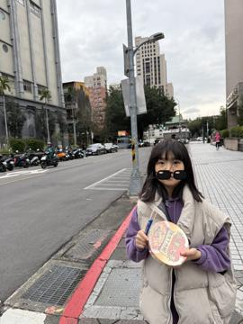
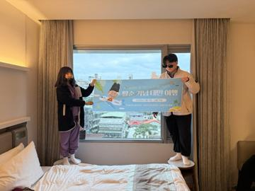
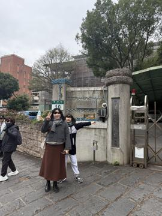
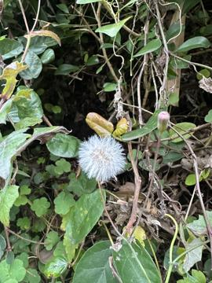
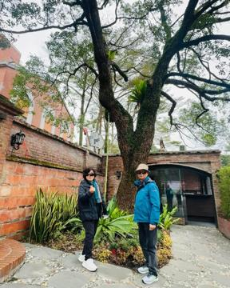
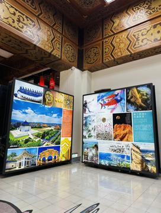

⚠ 코워크 작업은 클로드 서버에서 처리됩니다. 주민번호·통장 사본 같은 서류는 연결한 폴더에 넣지 마세요.
2
화면 지도 · 폴더 연결 — 어디를 누르나
데스크톱 · 유료10분
① 번호를 눌러 화면을 익히고, ② 폴더 연결을 따라 본 뒤 내 화면에서 똑같이 해 봅니다.
✳ 강지애님, 좋은 아침이에요
오늘 어떤 도움을 드릴까요?
＋채팅CoworkSonnet 5.5 중간🎙 ⌄
📁 폴더자동
진행 중
서류 정리파일 11개를 하나씩 열어 보고 있어요…
클로드와의 첫 인사3일 전
폴더 검색...
폴더 없음
최근
연습
폴더 열기...
자동 승인 (Auto)
직접 승인 (Manual)
폴더 선택
📁 다운로드
📁 문서
📁 내작업실
📁 사진
취소폴더 선택
클로드가 허락을 구합니다
내작업실 폴더의 파일을 읽어도 될까요?
거부허용
데스크톱의 세 화면 — 채팅 · Cowork · 코드
왼쪽 위 두 단추로 화면을 바꿉니다. 💬는 채팅·Cowork, </>는 코드 화면입니다.
채팅
Cowork ★오늘
코드
들어가기
💬 → 입력창 채팅
💬 → 입력창 Cowork
왼쪽 위 </>
하는 일
묻고 답하기, 파일을 붙여 분석
내 폴더를 맡겨 파일을 열고 · 바꾸고 · 저장, 예약 작업
프로그램 · 웹앱 코드를 만드는 개발용
이 과정
0번 비교 때
1~4차시 대부분
오늘은 쓰지 않음
코드 화면 가운데 상자는 무엇인가요?
🖥 domin
🖥 score
환경 선택 ⌄
· domin · score — 온라인에서 만든 게 아니라, 이 컴퓨터에서 최근 자주 쓴 폴더입니다. 앱이 자동으로 보여 주고(최대 8개), 누르면 그 폴더에서 바로 시작해요.
· 환경 선택 — 클로드가 어디서 일할지 고르는 곳입니다.
로컬(이 컴퓨터) — 내 컴퓨터의 폴더에서 일함
클라우드 — 앤트로픽 서버에서 일함. 온라인 claude.ai/code와 같은 기능이고, 컴퓨터를 꺼도 계속돼요. 깃허브 저장소를 연결해 씁니다
SSH · WSL — 다른 컴퓨터나 윈도우 안의 리눅스에서 일함 (개발자용)
실제 첫 화면을 본떠 그린 그림입니다. 버전에 따라 단추 이름·위치가 조금 다를 수 있어요. 이름보다 어디서 무슨 일을 하는지로 기억하세요.
승인 방식 골라 쓰기
반복 작업은 자동 승인(Auto)이 빠르지만, 이름 바꾸기 · 옮기기 · 지우기가 들어간 작업은 직접 승인으로 한 단계씩 확인하세요. 회사 폴더는 특히 직접 승인.
3
내 작업실 폴더 맡기고 읽혀 보기
12분
실습 서류 묶음 내려받기 → 압축 풀기
나온 내작업실 폴더를 문서 폴더로 옮기기
코워크에서 폴더 고르기 → 문서 → 내작업실
프롬프트 1 — 무엇이 들었나 보기
이 폴더의 파일을 하나씩 열어 무슨 서류인지 표로 정리해줘.
칸: 지금 파일 이름 / 무슨 서류 / 날짜 / 금액
흐리거나 없는 날짜·금액은 추측하지 말고 확인 필요로 써.
아직 아무것도 바꾸지 마.
| 지금 파일 이름 | 무슨 서류 | 날짜 | 금액 |
| 스캔_20261003_001.pdf | 아파트 관리비 고지서 | 2026-11-25 납부 | 142,000원 |
| IMG_4821.jpg | 피아노학원 교육비 영수증 (사진) | 2026-10-02 | 150,000원 |
| 최종_진짜최종.pdf | 임대차 계약서 | 2027-02-28 만료 | 월 400,000원 |
… (모두 11개)
💡 처음엔 아직 바꾸지 마 — 보기만 시키는 것이 안전한 습관입니다.
회사에선 이렇게 업무 활용
공유 폴더를 맡기고 목록표 만들어줘 한마디면 자료 현황표가 나옵니다. 회사 파일은 보안 규칙부터 확인하세요.
프로젝트로 회사 맥락 고정하기
왼쪽 프로젝트에 지침(우리 팀 용어·양식·말투)과 자주 보는 자료를 넣어 두면, 대화마다 다시 설명하지 않아도 됩니다.
⚡ 프로젝트 지침 초안
내작업실 서류를 보고, 내가 이런 서류를 자주 정리한다는 걸 바탕으로
프로젝트 지침 초안을 10줄 이내로 써줘. 파일 이름 규칙, 확인 필요 표시, 개인정보 처리 규칙을 넣어서.
☕ 쉬는 시간 10분
4
서류 이름 바꾸고 분류하기
오늘의 핵심20분
백업 → 표로 보기 → 바꾸기 → 나누기. 한 번에 하나씩, 결과를 보고 다음 부탁을 합니다.
💾 왜 백업부터? — 클로드가 이름을 잘못 바꾸거나 엉뚱한 폴더로 옮겨도, 백업해 둔 원본에서 다시 꺼낼 수 있습니다.
· 옮기기가 아니라 복사 — 원본은 그대로 남아요
· 덮어쓰지 말고 — 두 번 해도 처음 백업이 지워지지 않게
· 개수를 알려줘 — 내작업실 파일은 11개(메모.txt 포함). 숫자로 빠진 게 없는지 확인
프롬프트 2 — ① 백업부터
실습 서류를 _원본백업 폴더에 복사해줘.
같은 이름은 덮어쓰지 말고, 복사한 개수를 알려줘.
프롬프트 3-1 — ② 바뀔 이름 표로 보기
파일 이름을 날짜_종류_내용으로 바꾸려고 해.
예) 2026-11-25_고지서_관리비10월.pdf
종류는 [고지서, 영수증, 계약서, 안내문, 보험, 기타] 중 하나.
날짜가 불분명하면 확인 필요.
원래 이름 → 바뀔 이름 표만 보여줘. 아직 바꾸지 마.
| 원래 이름 | 바뀔 이름 |
| 스캔_20261003_001.pdf | 2026-11-25_고지서_관리비10월.pdf |
| IMG_4821.jpg | 2026-10-02_영수증_피아노학원10월.jpg |
| 문서1.txt | 2025-11-20_기타_세탁기보증서.txt |
→ 틀린 곳이 있으면 ○○는 영수증으로 해줘 로 먼저 고치기
프롬프트 3-2 — ③ 이름 바꾸기
좋아, 표대로 바꿔줘.
_원본백업은 건드리지 말고, 같은 이름이 생기면 물어봐.
바꾼 내용은 변경기록.txt로 남겨줘.
프롬프트 3-3 — ④ 종류별로 나누기
종류별로 폴더를 만들어 옮겨줘.
지우지 말고, 폴더별 개수를 알려줘.
승인 창은 읽어 보고 허용
탐색기로 내작업실을 직접 열어 확인
회사에선 이렇게 — 파일 이름 규칙 업무 활용
회사 이름 규칙(예: 20261107_총무팀_회의록_v01)을 스킬로 저장하면 폴더 정리해줘 한마디로 끝납니다. → 2차시
되돌릴 수 있게 기록 남기기
회사 파일은 "무엇을 무엇으로 바꿨는지" 기록이 있어야 안심입니다.
⚡ 바꾼 이름 기록
이름을 바꾼 내역을 이전 이름 / 새 이름 / 옮긴 폴더 칸으로 바꾼이름_기록.csv에 저장해줘.
이 기록으로 원래대로 되돌리는 방법도 적어 두고, 되돌리기는 실행하지 마.
5
여행 사진 나누기 — 프롬프트를 고쳐 가며
핵심25분
한 번에 다 시키지 않고 보기 → 헷갈리는 사진 → 흐린 사진 → 나누기 순서로 한 줄씩 보태 갑니다.
여행 사진 21장 내려받기 → 압축 풀기 → 여행사진 폴더를 내작업실 안에
강사가 실제로 다녀온 여행 사진을 작게 줄인 샘플입니다 (위치 정보는 지우고, 얼굴엔 선글라스를 씌움)
📁 내작업실 › 여행사진사진 21장
단추를 누르면 그 특징의 사진만 또렷하게 보입니다.

…623.jpg독사진 · 길에서 부채 든 아이

…623_01.jpg단체사진 · 호텔 창가 2명…623_02.jpg독사진 · 벽돌 조형물 앞…623_03.jpg독사진 · 절 입구 돌비석 앞…623_04.jpg단체사진 · 폭포 정원 7명

…623_05.jpg단체사진 · 대문 앞 2명…623_06.jpg⚠ 지나가는 사람만 → 풍경…623_07.jpg단체사진 · 흰 문 앞 3명…623_08.jpg독사진 · 빨간 벽돌 건물 앞…623_09.jpg단체사진 · 성당 앞 2명…623_10.jpg단체사진 · 나무 아래 2명…623_11.jpg⚠ 꽃 · 음식 아님 → 풍경

…623_12.jpg⚠ 풀꽃 · 음식 아님 → 풍경…623_13.jpg독사진 · 붉은 벽돌 저택…623_14.jpg단체사진 · 나무길 끝 3명…623_15.jpg단체사진 · 벽돌담 3명…623_16.jpg풍경 · 전시실 · 날짜 없음

…623_17.jpg단체사진 · 큰 나무 앞 2명 · 날짜 없음

…623_18.jpg풍경 · 전시 안내판…623_19.jpg흐린 사진 · 흔들림 — _09와 같은 장면…623_20.jpg흐린 사진 · 흔들림 — _13과 같은 장면
독사진 · 단체사진 사진 속에서 찍히려고 선 사람 수로 나눠요 (1명 · 2명 이상).
풍경 사람이 없는 사진 (_16 전시실 · _18 안내판).
⚠ 헷갈리는 사진 뒤에 지나가는 사람만 있는 _06, 음식처럼 보일 수 있는 꽃 _11 · _12 — 셋 다 결국 풍경으로 갑니다.
음식 이 폴더엔 한 장도 없어요. 없다고 말하는지 봅니다.
흐린 사진 흔들려 번진 사진(_19 · _20). 바로 앞에 같은 장면을 잘 찍은 사진이 있어요.
날짜 파일 이름의 20261105는 카톡으로 받은 날. 찍은 날(2025년 2월)은 사진 정보에 있고, _16 · _17은 그마저 없어요.
프롬프트 4 — 사진 ① 종류부터 보기
여행사진 폴더의 사진을 한 장씩 보고 표로 정리해줘.
칸: 파일 이름 / 찍은 날짜 / 종류 / 사람 수 / 한 줄 설명
종류는 독사진(1명) / 단체사진(2명 이상) / 음식 / 풍경 중 하나.
찍은 날짜는 사진 정보(EXIF)에서 읽고, 없으면 확인 필요.
아직 옮기거나 바꾸지 마.
| 파일 이름 | 찍은 날짜 | 종류 | 사람 수 | 한 줄 설명 |
| …623.jpg | 2025-02-07 15:31 | 독사진 | 1 | 길에서 부채를 든 아이 |
| …623_04.jpg | 2025-02-07 16:56 | 단체사진 | 7 | 폭포 정원 앞 단체 사진 |
… 모두 21장
프롬프트 5 — 사진 ② 헷갈리는 사진 바로잡기 (한 줄 보태기)
뒤에 지나가는 사람만 찍힌 사진은 풍경으로 해줘.
꽃은 음식이 아니야. 음식 사진이 없으면 없다고만 말해줘.
날짜가 확인 필요인 사진은 따로 알려줘. 나머지는 그대로 둬.
음식 사진은 0장이에요.
…623_06은 뒤에 지나가는 사람만 있어 풍경으로 바꿨어요.
날짜를 알 수 없는 사진: …623_16, …623_17
🙋 클로드는 얼굴로 누구인지 알아보지 않습니다. 사람 수 · 옷 색 · 장소 같은 특징으로 나눠요.
프롬프트 6 — 사진 ③ 흐린 사진 골라내기
흔들리거나 초점이 나간 사진을 찾아줘.
눈으로 보고 선명도를 숫자로도 재서, 표에 상태 칸(잘 나옴 / 흐림)으로 붙여줘.
같은 장면을 연달아 찍은 사진은 더 잘 나온 쪽을 알려줘.
| 파일 | 상태 | 선명도 | 같은 장면의 잘 나온 사진 |
| …623_19.jpg | 흐림 (흔들림) | 474 | …623_09.jpg (6179) |
| …623_20.jpg | 흐림 (흔들림) | 375 | …623_13.jpg (5357) |
…623_11 꽃 사진은 숫자가 낮지만 배경만 흐려요 — 잘 나옴
🔎 숫자만 믿지 말고 눈으로 한 번 더. 꽃처럼 배경만 흐린 사진은 잘 나온 사진이에요.
→ 옮기기 전에는 서류 때처럼 백업부터
프롬프트 7-1 — 사진 ④ 백업
원본 사진을 _원본백업 폴더에 복사해줘. 같은 이름은 덮어쓰지 마.
프롬프트 7-2 — 사진 ⑤ 폴더로 나누기
표대로 잘 나온 사진은 독사진, 단체사진, 음식사진, 풍경사진 폴더로,
흐린 사진은 흐린사진 폴더로 옮겨줘.
지우지 말고, 사진 없는 폴더는 만들지 마.
옮기기 전에 어느 폴더로 갈지 표로 먼저 보여줘.
📱 카톡으로 받은 사진은 이름이 KakaoTalk_받은날짜_숫자라 무슨 사진인지 알 수 없어요. 폴더 이름처럼 바꿔 둡니다.
프롬프트 7-3 — 사진 ⑥ 새 이름 미리 보기
옮긴 사진의 이름을 [가족여행]_찍은연월_종류_번호.jpg로 바꾸려고 해.
찍은연월은 사진 정보의 날짜로 2502처럼 네 자리, 종류는 들어 있는 폴더 이름 그대로, 번호는 찍은 순서대로 01부터.
날짜가 없는 사진은 같은 여행이니 2502로 해줘.
아직 바꾸지 말고 지금 이름 → 새 이름 표로 먼저 보여줘.